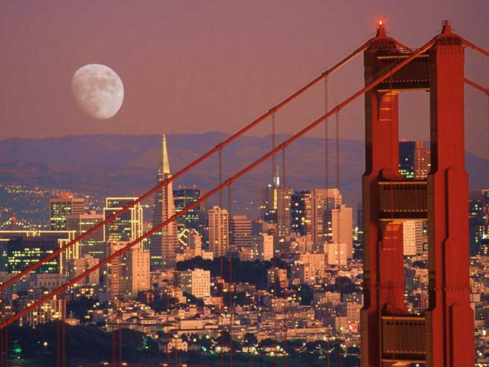
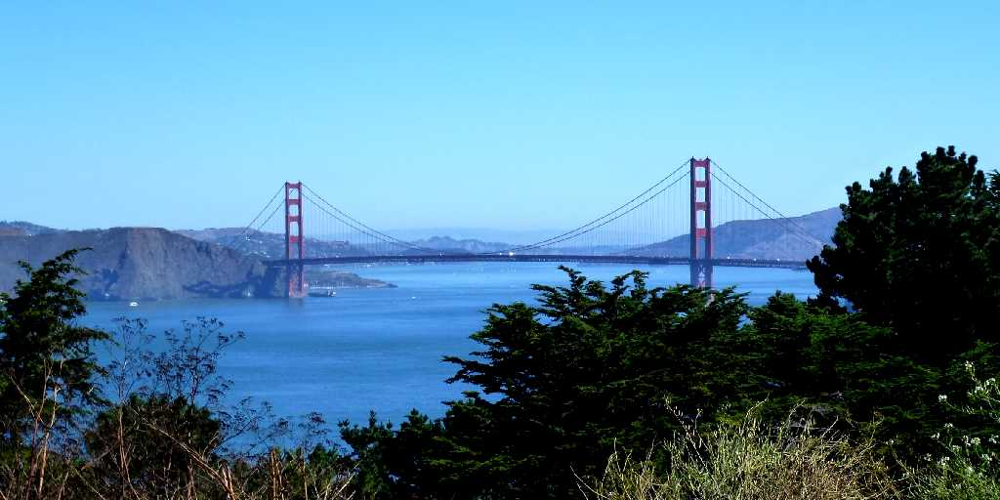
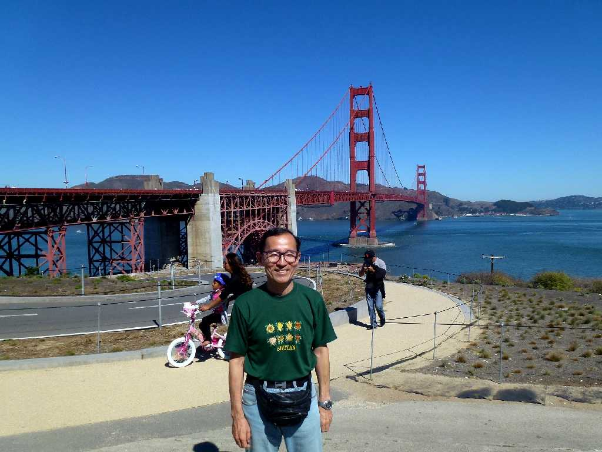

July 1970 Golden Gate Bridge San Francisco
全長約２,７９０ｍの橋は１９５９年までは世界最長を誇っていた １９３３年に着工しおよそ４年の歳月をかけ１９３７年５月に開通したから当時の技術力には驚かされる

Golden Gate Bridge San Francisco
８０日間世界一周鉄道の旅で７５日目 学生時代以来約４０年ぶりのサンフランシスコ再訪問

September 6 2013 Golden Gate Bridge San Francisco